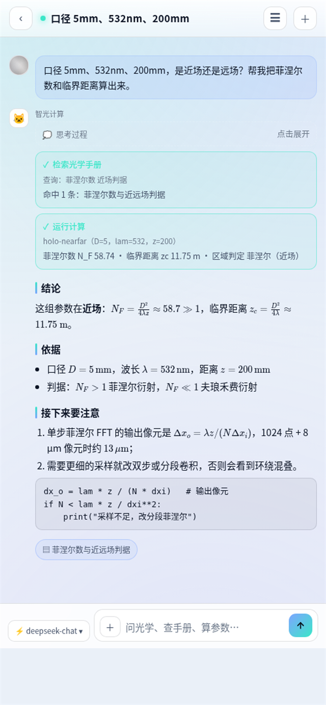
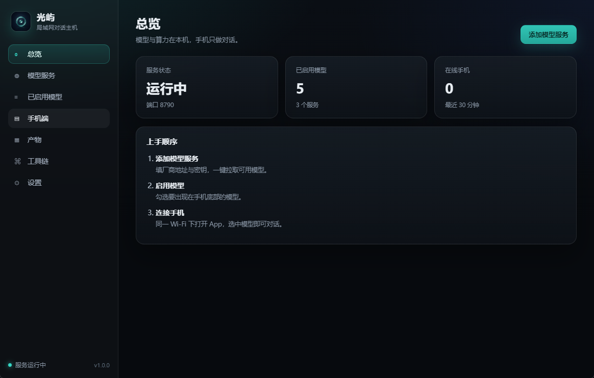
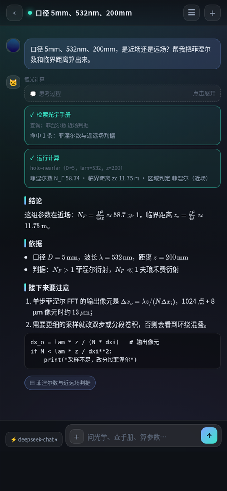
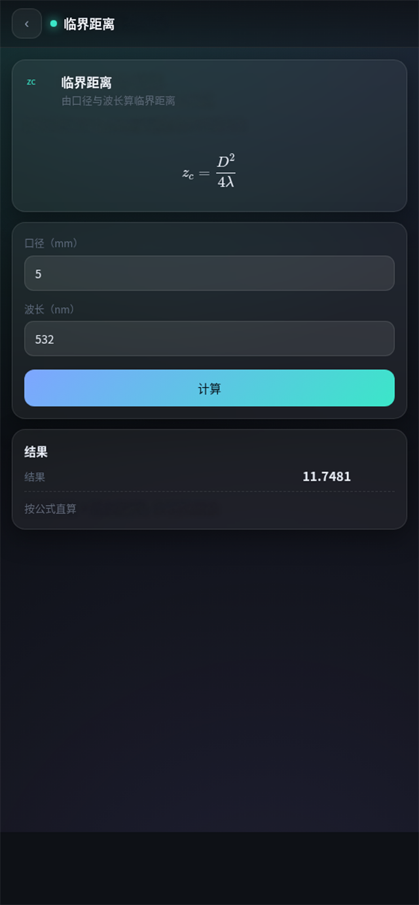

光学宝典
手机端的光学设计与仿真工作台。手册检索、公式计算器、Optiland 镜头设计与追迹、技能库与模板库都在一个安装包里，离线可查、可算；需要重算时交给电脑上的光屿服务端，两端共用一套接口。
- 系统要求
- Android 8.0+
- 离线能力
- 手册 · 计算 · 追迹
- 模型
- 自带 API Key

接模型
自带 Key，模型列表按接口现拉
查手册
对话驱动检索，答话带原文出处
算参数
公式计算器出数、出单位、出依据
能长个
助手自己写词条、写计算器算法
装在手机上的部分
手册、镜头、计算器、技能、模板与对话同在一个安装包；不依赖常驻服务，断网也能查、能算、能追迹。
大模型对话 stream
流式输出逐字上屏。走 OpenAI 兼容接口，预置 DeepSeek、火山方舟、Kimi、智谱、通义、硅基流动、OpenRouter、OpenAI、Anthropic、Gemini、Ollama 与自定义网关；模型列表从接口现拉，服务商上新模型不必等应用更新。
光学手册 离线检索
词条按类别分组，支持分页浏览与对话内检索。问一句「单透镜球差怎么算」，先命中词条再作答，回答带原文与公式；查不到会明说是模型自己的知识。
镜头设计与追迹 Optiland
内置 Optiland，可建系、设面型、追迹、算指标、看 2D 布局与 3D 视图，也能做优化与公差。多重结构、光线瞄准、偏振、镀膜、非顺序、相位与散射在同一套模型里，离线可算。
公式计算器 带单位
按类别分组，每个计算器带自己的算法与参数单位，改一个参数即时重算，结果分行给出数值与依据。公式离线渲染，断网可用；编辑界面可按块组装。
技能库 专项流程
镜头设计、膜系、衍射、照明等方向的专项流程做成技能，技能面板里按类排列。选中后由助手按流程逐步执行，过程与中间结果留在对话里。
模板库 结构套用
常用光学结构做成模板，选中即生成可编辑的镜头数据，再按需改面型、口径与材料。省去从空白开始搭结构的时间。
文件互通 zmx · seq · len · json
微信收到的 .zmx、Code V .seq、Oslo .len、Optiland .json，选「用其他应用打开」即可进应用；导入后继续追迹，再原样导出，经系统分享面板发回微信。PDF、HTML 与截图走同一套链路。
产物管理 附件 · 报告
对话中生成的图表、报告、导出文件统一进产物区，可搜索、排序、打开与再次分享。图片附件可直接读入，PDF 与 Word 报告按模板生成。
主题与输入区
深色、浅色、跟随系统三档，浮层与下拉都跟随主题。底部模型、思考、联网、技能四个胶囊在窄屏下自动收窄，发送按钮常驻；任务进度卡可拖到任意一侧并记住位置。
密钥加密 AES-256-GCM
API Key 用系统密钥库派生的密钥加密后落盘，磁盘上只有密文，界面只露后四位；请求由应用直接发给你选的服务商，不经过中转。密文绑定本机，换机解不开。
Token 策略 四档
省 Token、均衡、全量、不限四档。省 Token 只带当前问题要用到的工具与近期历史；全量保留完整定义。日常对话更省用量。
自我扩展 加词条 · 加算法
内核挂两个工具：往手册加词条、往计算器表加算法。助手判定知识缺口时自己补，写完运行时立刻生效，不用等下一个版本。
应用内更新
启动时读更新清单，与本地 versionCode 比对；有新包就提示下载并调系统安装器覆盖安装。签名固定，覆盖安装不丢 Key、历史与自建词条。
光屿：把重活交给电脑
Windows 免安装程序，双击即起。手机负责界面、预览与轻交互，镜头计算、Python 执行与模型调度由这台电脑承担，两端共用 /api/v1。

8790HTTP 网关，手机与浏览器都连这里8793Python 后端，镜头计算与算例执行8791UDP 局域网发现，同一 Wi-Fi 自动连上模型服务在服务端配置一次，手机端只做选择；镜头优化与出图、Python 依赖安装、产物存储都留在电脑上。跨网段时在客户端手动填地址，并在防火墙放行上述端口。
深色与浅色都按同一套规则
公式、单位、工具调用与产物都在同一屏内；主题切换后浮层、下拉与选中态一并跟随。


下载与安装
不用注册账号，不用先装任何运行时。客户端在本仓库发布，服务端在 Meow-optics-V2 的同一 tag 下。
光学宝典 安卓版
versionCode 155 64.4 MB单文件安装包，发布在本仓库的 Releases，链接按 tag 固定，不随版本号变化。
下载 MeowOptics-v154-test67.apk下载安装包
手机直接打开本页下载，或先在电脑上下载再传到手机。
允许安装
首次会提示「来自未知来源」。在系统设置里给浏览器或文件管理器开一次「安装未知应用」，装完可以关回去。
填一个 Key
进设置选服务商、粘贴 API Key，点拉取模型列表，选一个模型即可对话；不填 Key 也能用手册、计算器与镜头模块。
新版本怎么送到手机上
不走应用商店，也不用用户回来翻下载页。
机制
应用启动时 GET 下面这份清单，把 versionCode 与本地值比较：更大就提示，确认后走系统安装器覆盖安装。发新版只需在 Releases 上传 APK 并改这一份清单。
https://alice-p197.github.io/meow-optics/update.json
整数，只能递增。判断有无新版本的唯一依据。
给人看的版本号，弹窗里显示。
新包直链，指向本仓库 Release 的资产。
字节数，用于进度与完整性校验。
常见问题
我的 Key 会被上传到别处吗
不会。Key 只存在本机，用系统密钥库派生的密钥加密；请求由应用直接发给你选的服务商，不经过任何中转。界面里只显示后四位。
不装服务端能用吗
能。手册、计算器、镜头模块与技能库是离线的；服务端用于大算例、Python 依赖与模型调度。只用手机时功能范围小一些，但不影响查、算与出图。
不填 Key 能用吗
能用。手册、计算器全离线；对话入口在这部分退化成规则引擎，能按意图调计算器，但不会自由作答。
换手机后旧 Key 还能恢复吗
不能，重新填一个。密文绑定在原机的系统密钥库上，新机解不开——这是加密设计的一部分，不是故障。
从 1.5.8 升级要注意什么
直接下载新版覆盖安装即可，不用先卸载：包名与签名都没变，Key、对话历史、记忆与自建词条都在。更新清单的 versionCode 已到 155。
怎么往手册里加自己的内容
在对话里让助手加，它会调用内核的加词条工具，写完立刻能检索，不用等下一个版本。
支持哪些模型
任何 OpenAI 兼容接口都行，含自建网关与本地 Ollama。预置目录里有十二家，模型列表按接口返回实时生成。
服务端必须和手机在同一网络吗
同一 Wi-Fi 时靠 UDP 广播自动发现；跨网段或跨网络时，在客户端手动填服务端地址，并在防火墙放行 8790、8793、8791。